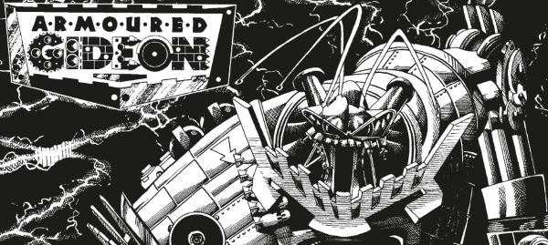

The titular giant robot splits his time between wiping out demonic life on The Edge (a demon-dimension sometimes linked to Earth through temporary portals) and chasing down anyone who's taken his photograph. Fun things about Gideon are his emote-screen (an idea borrowed from Ro-Busters' Mek-Quake), the inventive ways in which he eliminates his targets and of course his single catch-phrase: "Annihilate!"
The third series, usually known as The Collector, goes all meta-crossover and includes multiple characters who, at the time, were considered defunct: Bill Savage, Blackhawk, Sam Slade, the Neon Knights, Abelard Snazz, the Harlem Heroes, The Helltrekkers, Shako, Harry Angel, a Geek, MACH Zero, Wolfie Smith, Dan Dare & the Mekon, Harry Twenty, Nick Stone, Max Normal, Artie Gruber, giant ants, Ace Garp & GBH, Matt Tallon, Captain Klep, Tharg, Agent Rat, Robot Archie (who had also crossed over into Zenith a few years earlier), Judge Dredd, Judge Death, Mean Machine Angel and Rick Random. (And those are just the ones that are easy to recognize.)
The Order gets a bit of revenge by featuring a version of Armoured Gideon in some of their multi-dimensional adventures.
Art by Simon Jacob
| Story Title | Parts | Pages | w indicates a wraparound coverCovers | Year(s) | Issues | Writer | Artist | Colourist | Letterer |
|---|---|---|---|---|---|---|---|---|---|
| Armoured Gideon | 11 | 56 | 672: Simon Jacob [repeated X23] 677: Simon Jacob 2 | 1990 | Reprints: X23671-681 | John Tomlinson | Simon Jacob | [b&w] | Steve Potter |
| Starhavon's Edge | 1 | 8 | 0 | 1990 | SFS13 | John Tomlinson | Simon Jacob | <-- | John Aldrich |
| No, No, Nanette | 1 | 6 | 0 | 1991 | 722 | John Tomlinson | Simon Jacob | <-- | Tom Frame |
| Making Movies | 1 | 8 | 0 | 1992 | SFS15 | Alan McKenzie | Sean Phillips | <-- | Annie Parkhouse |
| [Book II] | 13 | 78 | 831: Simon Jacob 838: Simon Jacob 2 | 1993 | 828-840 | John Tomlinson | Simon Jacob | <-- | Annie Parkhouse |
Linked to: Angel Invasion Shako Features a crossover event with multiple (at the time) out of print characters.[The Collector] | 11 | 67 | 895: Simon Jacob 897: Simon Jacob 2 | 1994 | 889-899 | John Tomlinson | Simon Jacob: 1‑8,10‑11 Mike White: 9 (final panel 8) various | <-- | 1‑8,10‑11: Annie Parkhouse 9: Peter Knight various |
| An Evil Ladling: Prologue | 1 | 6 | 0 | 1995 | 928 | John Tomlinson | Simon Jacob | <-- | Annie Parkhouse |
| Trading Places | 7 | 42 | 933: Simon Jacob 1 | 1995 | 929-935 | John Tomlinson | Simon Jacob | <-- | Annie Parkhouse |
| >> Posters / Teasers << | |||||||||
Star Scan.Armoured Gideon | 1 | 1 | 0 | 1990 | 677 | n/a | Simon Jacob | <-- | n/a |
Star Scan.[Armoured Gideon] | 1 | 1 | 0 | 1990 | 685 | n/a | Simon Jacob | <-- | n/a |
| Big Things Are Coming | 1 | 1 | 0 | 1992 | WS4 | n/a | Simon Jacob | [b&w] | n/a |
| Armoured Gideon | 1 | 1 | 0 | 1993 | 825 | n/a | Simon Jacob | <-- | n/a |
From Tharg's Thrill ArchivesPart 18: Armoured Gideon | 1 | 1 | 0 | 1994 | 910 | n/a | Simon Jacob | <-- | n/a |
| year | episodes | pages |
| 1982 | 0 | 0 |
| 1983 | 0 | 0 |
| 1984 | 0 | 0 |
| 1985 | 0 | 0 |
| 1986 | 0 | 0 |
| 1987 | 0 | 0 |
| 1988 | 0 | 0 |
| 1989 | 0 | 0 |
| 1990 | 12 | 64 |
| 1991 | 1 | 6 |
| 1992 | 1 | 8 |
| 1993 | 13 | 78 |
| 1994 | 11 | 67 |
| 1995 | 8 | 48 |
| 1996 | 0 | 0 |
| 1997 | 0 | 0 |
| 1998 | 0 | 0 |
| 1999 | 0 | 0 |
| 2000 | 0 | 0 |
| 2001 | 0 | 0 |
| 2002 | 0 | 0 |
| 2003 | 0 | 0 |
Comic strip data (excludes other content):